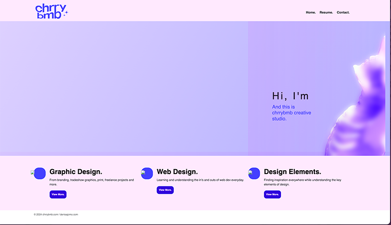
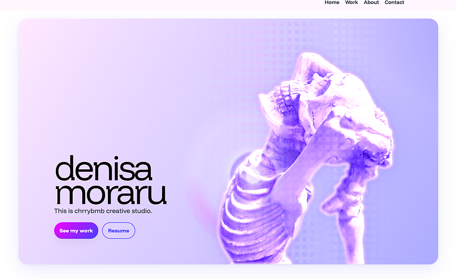
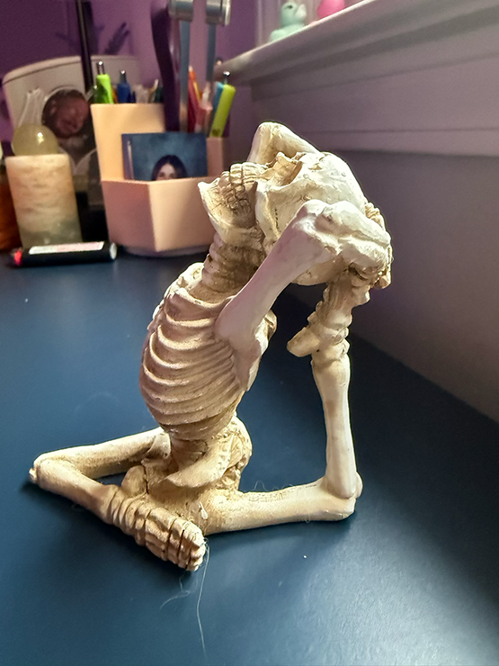

brand story
chrrybmb pairs crisp UI with iridescent motion—retro 8-bit energy meets prism fractals. The system stays mini and intentional: compact spacing, pixel cues, and modern type with a nostalgic glow.


chrrybmb pairs crisp UI with iridescent motion—retro 8-bit energy meets prism fractals. The system stays mini and intentional: compact spacing, pixel cues, and modern type with a nostalgic glow.



the world is an iridescent prism
A lyrical counterweight to Funnel Display—used for kickers and asides. It also carries a subtle classic arcade vibe that resonated with me and stays true to the brand’s pixel energy across the site.
Core swatches (tap to copy)
Pixel-mini, uppercase Funnel Display. Primary + ghost.